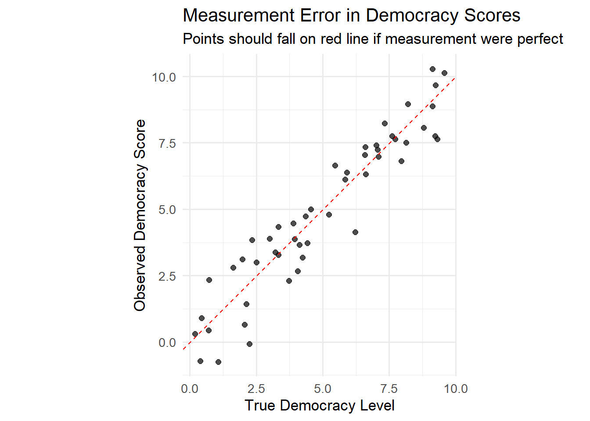
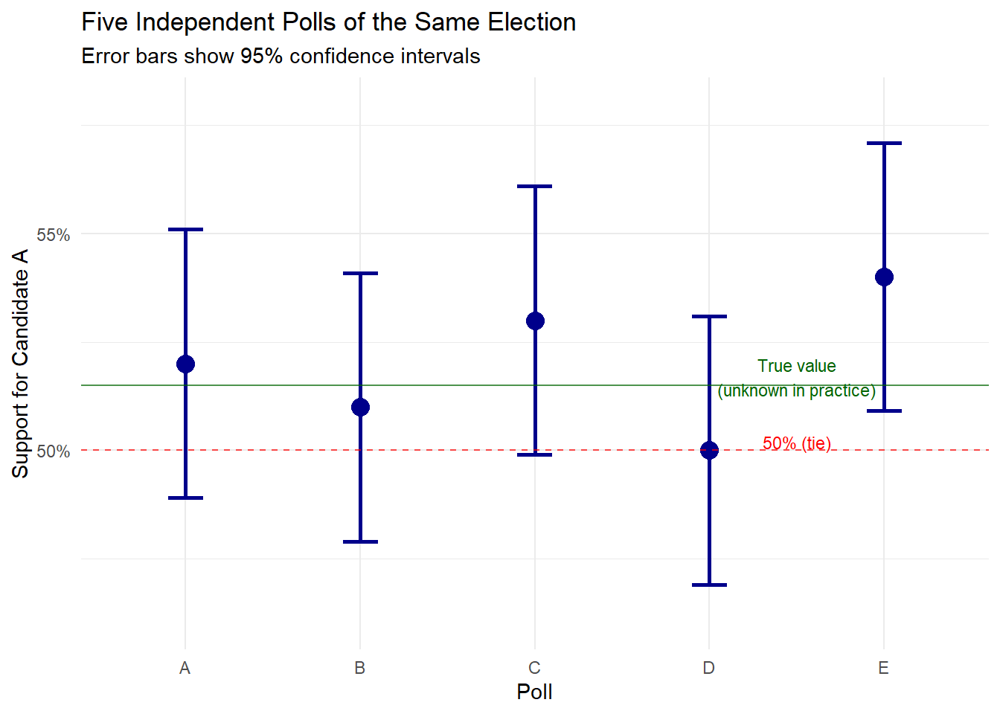

1Introduction to Statistics and Data Analysis for Political Science
1.1 What is Statistics?
Statistics is the science of learning from data in the presence of uncertainty. More specifically, statistics provides:
Methods for collecting data systematically and without bias
Tools for describing and summarizing what we observe in our data
Techniques for making inferences about populations based on samples
Frameworks for quantifying uncertainty in our conclusions
Approaches for modeling relationships between variables
In political science, statistics helps us move beyond anecdotal evidence and personal impressions to make rigorous, evidence-based claims about political phenomena.
1.2 The Statistical Mindset
Developing a statistical mindset is less about memorizing formulas and more about adopting a way of thinking about the world. At its core, statistics teaches us to be curious, cautious, and systematic when drawing conclusions from data. Five key habits of mind are especially important:
Embrace uncertainty We almost never know the “true” values in a population. Estimates always come with error margins. Recognizing uncertainty is not a weakness—it is an honest reflection of reality. For example, an election poll showing a candidate at 52% is never a precise truth, but rather an estimate with a margin of error.
Think about variation Why do individuals, groups, or cases differ? Variation is the fuel of statistics: without it, there would be nothing to study. Sometimes variation is random (sampling error), sometimes systematic (gender, education, income), and often both. Understanding variation helps us detect meaningful patterns rather than noise.
Question relationships Just because two things move together does not mean one causes the other. For instance, ice cream sales and drowning incidents both rise in summer—but eating ice cream does not cause drowning. Statistical thinking demands that we test whether relationships reflect causation or mere association.
Be skeptical A striking pattern in the data might still be a fluke. Could the result have appeared simply by chance? Tools like p-values, confidence intervals, and replication help us distinguish real effects from random coincidences.
Consider alternatives Every explanation competes with other possible explanations. If we observe that students who study in groups score higher on exams, is it the group study that helps—or are stronger students more likely to choose groups in the first place? Thinking in terms of competing hypotheses makes our conclusions stronger.
1.3 Population vs. Sample: The Foundation of Inference
The Fundamental Challenge
In political science, we’re often interested in understanding entire populations—the complete set of units we want to study. However, studying entire populations is usually impossible, impractical, or unnecessary.
What Can Be a Population?
A population in political science can consist of various types of units:
Individuals
Population: All 240 million American adults
Sample: 1,000 randomly selected adults in a survey
Research question: What percentage support universal healthcare?
Countries
Population: All 195 sovereign nations in the world
Sample: 50 countries from different regions and development levels
Research question: Does democracy correlate with economic growth?
Subnational Units
Population: All 3,143 U.S. counties
Sample: 200 randomly selected counties
Research question: How does unemployment affect crime rates?
Organizations
Population: All NGOs registered with the United Nations
Sample: 100 NGOs working in different policy areas
Research question: What factors predict NGO effectiveness?
Events or Time Periods
Population: All elections held in Europe since 1945
Sample: 300 elections from different countries and decades
Research question: How do economic conditions affect incumbent vote share?
Legislative Units
Population: All bills introduced in Congress from 2000-2020
Sample: 500 randomly selected bills
Research question: What predicts whether a bill becomes law?
The Sample Solution and Key Insight
A sample is a subset of the population we actually observe and measure. The key insight of statistics is that we can learn about populations by studying samples—if we’re careful about how we choose them.
From our sample, we want to make inferences about the population:
For example: If 52% of our sample supports Candidate A (\hat{p} = 0.52), what can we say about support in the entire population (\pi)?
The fundamental principle: random selection gives every unit in the population an equal chance of being included, preventing systematic bias.
Visualizing Sampling
Let’s see how different sample sizes affect our estimates:
# Simulate sampling from a populationpopulation_size <-1000000true_proportion <-0.60# True population parameter (π)# Take different sized samplessample_sizes <-c(100, 500, 1000, 5000)results <-data.frame()for (size in sample_sizes) {for (i in1:20) { sample_result <-rbinom(1, size, true_proportion) / size results <-rbind(results, data.frame(size = size, trial = i,estimate = sample_result)) }}# Visualizeggplot(results, aes(x =factor(size), y = estimate)) +geom_point(alpha =0.6, size =2, color ="steelblue") +geom_hline(yintercept = true_proportion, color ="red", linetype ="dashed", size =1) +labs(title ="How Sample Size Affects Accuracy",subtitle ="Red line shows true population value (60%)",x ="Sample Size",y ="Sample Estimate") +theme_minimal() +scale_y_continuous(labels = scales::percent)
Figure Note: This scatter plot demonstrates how sample size affects the accuracy of estimates. Each blue dot represents one sample estimate. Notice how larger samples (right side) cluster more tightly around the true population value (red dashed line), illustrating reduced sampling variability.
Key Takeaway: This demonstrates the law of large numbers—as sample size increases, our estimates become more reliable. With n=100, estimates vary widely (55-65%), but with n=5000, they’re much more precise (59-61%). This is why national polls typically survey 1,000+ people rather than 100.
The Representation Problem
Not all samples are created equal. Consider these sampling methods:
Convenience Sample: Surveying students in your political science class
Problem: Not representative of all voters
Example: College students skew younger and more liberal than the general population
Voluntary Response Sample: Online poll on a news website
Problem: Self-selection bias
Example: People with strong opinions are more likely to participate
Random Sample: Each unit has equal probability of selection
Solution: Best chance of representative sample
Example: Randomly selected phone numbers from all area codes
Stratified Random Sample: Divide population into groups, sample from each
Advantage: Ensures representation of key subgroups
Example: Sample equal numbers from each state for national survey
Cluster Sample: Randomly select groups, then survey everyone within
Advantage: Cost-effective for geographically dispersed populations
Example: Randomly select 50 cities, then survey residents within those cities
1.4 Sample, Population, and Superpopulation (DGP)
The Basic Framework: Sample and Population
Population
The population is the complete set of all units we’re interested in studying.
Examples: - All registered voters in Canada - Every tree in Yellowstone National Park
- All customers who bought from Amazon in 2024 - Every student currently enrolled at your university
Key characteristic: The population is finite and fixed. It has true parameters (like mean μ and standard deviation σ) that are fixed numbers, even if unknown.
Sample
A sample is a subset of the population that we actually observe and measure.
Examples: - 1,000 randomly selected Canadian voters (from the population of all voters) - 200 trees measured in designated plots (from all Yellowstone trees) - 10,000 customer purchases we analyze (from millions of Amazon transactions) - 300 students who respond to your survey (from all university students)
Key characteristic: We use the sample to make inferences about the population parameters using statistics (like sample mean x̄ and sample standard deviation s).
The Classical Statistical Framework
POPULATION (usually unknown)
↓
[Sampling Process]
↓
SAMPLE (what we observe)
↓
[Statistical Inference]
↓
ESTIMATES about Population
This is why we need: - P-values: To test hypotheses about the unknown population - Confidence intervals: To quantify uncertainty about population parameters - Standard errors: To measure how much our sample statistics might vary
When This Framework Breaks Down
Sometimes we have data on the entire population. For example: - Census data covering every person - All stock trades on the NYSE for 2024 - Every goal scored in the Premier League last season - Administrative data on all hospital admissions
The paradox: If we already know the population mean μ (because we calculated it from everyone), why would we need a confidence interval for μ?
Superpopulation (Data Generating Process)
The superpopulation or Data Generating Process (DGP) is a theoretical, infinite population from which our observed finite population is considered one realization.
Instead of:
Population → Sample
We now think:
SUPERPOPULATION (infinite, theoretical)
↓
[Data Generating Process]
↓
OBSERVED POPULATION (what we have)
↓
INSIGHTS about the DGP
Examples to Build Intuition
Example 1: Annual Sales Data
Observed population: All 50,000 sales transactions in 2024
Superpopulation view: These 50,000 sales are one realization from an ongoing business process that could have generated different transactions if circumstances varied slightly
Why it matters: We want to understand the sales process to predict 2025, not just describe 2024
Example 2: Election Results
Observed population: Turnout in all 3,000 municipalities in the 2024 election
Superpopulation view: These results are one outcome from an electoral process involving weather, campaigns, issues, etc. that could have produced different results
Why it matters: We want to understand what drives turnout in general, not just what happened in this specific election
Example 3: Student Grades
Observed population: Final grades for all 400 students in Statistics 101 this semester
Superpopulation view: These 400 students and their grades are one realization from the ongoing process of statistics education at your university
Why it matters: You want to know if a new teaching method works, not just whether these specific 400 students did better
1.5 Summary Table
Concept
Size
Example
What We Learn
Sample
Finite subset
1,000 surveyed voters
Estimates of population parameters
Population
Finite, complete
All 10 million voters
Exact parameters (if we measure everyone)
Superpopulation
Infinite, theoretical
The electoral process that generates voter behavior
Understanding of underlying mechanisms and processes
The Key Insight
The superpopulation concept allows us to: - Use statistical inference even with complete data - Think about our data as one possible outcome from an underlying process
- Make statements about mechanisms, not just descriptions - Generalize beyond the specific time and place of our data
This is why researchers often use p-values and confidence intervals even with population data - they’re not being careless, they’re implicitly treating their data as a realization from a broader data generating process they want to understand.
1.6 Key Concepts: Parameters, Statistics, and Estimates
Parameters vs. Statistics
A fundamental distinction in statistics is between parameters and statistics:
Population Parameters
Numerical characteristics of the entire population
Usually unknown and what we want to learn about
Denoted by Greek letters: \mu (mu) for mean, \sigma (sigma) for standard deviation, \pi (pi) for proportion
Examples: The true percentage of all Americans who support universal healthcare
Sample Statistics
Numerical characteristics calculated from sample data
What we actually observe and calculate
Denoted by Roman letters: \bar{x} for sample mean, s for sample standard deviation, \hat{p} for sample proportion
Examples: The percentage of 1,000 survey respondents who support universal healthcare
Notation Convention
Throughout this text, we’ll consistently use: - Population parameters: \mu (mean), \sigma (standard deviation), \pi (proportion)
- Sample statistics: \bar{x} (mean), s (standard deviation), \hat{p} (proportion)
This notation helps us always distinguish between what we observe (statistics) and what we want to know (parameters).
The Inference Process: From Statistics to Parameters
The core of statistical inference involves using sample statistics to make educated guesses about population parameters:
Example: If 52% of our sample (\hat{p} = 0.52) supports a candidate, we use this statistic to estimate the population parameter (\pi) representing true support among all voters.
Estimates and Estimators
An estimator is the method or formula used to approximate a parameter. An estimate is the specific numerical result from applying that estimator to a particular sample.
Estimator: The sample mean \bar{x} = \frac{\sum x_i}{n}
Estimate: \bar{x} = 6.3 years of education (the actual number from our data)
1.7 The Soup Analogy: Understanding Statistical Inference
Imagine you’re a chef making a large pot of soup for 1,000 people. You want to know if the soup has the right amount of salt, but you can’t taste all of it. Instead, you take a small spoonful to taste.
The Population: The entire pot of soup (1,000 servings)
The Sample: Your spoonful
The Parameter: The true saltiness of the entire pot (unknown)
The Statistic: The saltiness of your spoonful (what you can measure)
Statistical Inference: Using the spoonful’s saltiness to draw conclusions about the entire pot
Key Insights from the Soup Analogy:
Random sampling matters: You must stir the soup first and take your spoonful from a random location. If you always sample from the top, you might miss that the salt settled to the bottom.
Sample size affects precision: A bigger spoonful gives you a better sense of the overall saltiness than a tiny sip.
Uncertainty is inherent: Even with good sampling, your spoonful might not perfectly represent the whole pot. There’s always some uncertainty.
Systematic bias ruins everything: If someone secretly added extra salt to just your spoonful, your inference about the whole pot would be wrong. This represents sampling bias.
Inference has limits: You can estimate the average saltiness, but your spoonful can’t tell you if some portions are saltier than others (variability within the population).
This analogy captures the essence of statistical thinking: we use small, carefully selected samples to learn about much larger populations, always acknowledging the uncertainty inherent in this process.
1.8 A Real-World Example: What Predicts Electoral Success?
Let’s start with a question that gets to the heart of political science: What makes politicians win elections?
Imagine you’re a campaign manager trying to understand why some incumbents win by landslides while others barely scrape by. You have data on 200 recent congressional elections, including each incumbent’s approval rating, the state of the local economy, and their victory margin.
# Create realistic electoral dataset.seed(42) # Consistent with initial setupn_elections <-200# Generate correlated predictors (realistic scenario)approval_rating <-runif(n_elections, 35, 85)economic_growth <-rnorm(n_elections, 2.5, 1.5)campaign_spending_100k <-rnorm(n_elections, 8, 2) # In units of $100,000 for clarity# Create victory margin with realistic relationshipsvictory_margin <--15+0.6* approval_rating +# Strong approval effect2.5* economic_growth +# Economic voting0.3* campaign_spending_100k +# Money helps (effect per $100k)rnorm(n_elections, 0, 8) # Random factors# Create datasetelection_data <-data.frame(district =1:n_elections,approval = approval_rating,econ_growth = economic_growth,spending_100k = campaign_spending_100k,victory_margin = victory_margin,won = victory_margin >0)# Quick visualizationp1 <-ggplot(election_data, aes(x = approval, y = victory_margin)) +geom_point(alpha =0.6, color ="steelblue") +geom_smooth(method ="lm", se =TRUE, color ="red") +geom_hline(yintercept =0, linetype ="dashed", alpha =0.7) +labs(title ="Approval Rating vs. Victory Margin",x ="Approval Rating (%)",y ="Victory Margin (percentage points)",subtitle ="Points above the dashed line represent wins")print(p1)
# Run the regressionsimple_model <-lm(victory_margin ~ approval, data = election_data)summary(simple_model)
Call:
lm(formula = victory_margin ~ approval, data = election_data)
Residuals:
Min 1Q Median 3Q Max
-21.9948 -6.1420 0.5653 5.9218 28.4974
Coefficients:
Estimate Std. Error t value Pr(>|t|)
(Intercept) -9.78570 2.63382 -3.715 0.000264 ***
approval 0.64728 0.04192 15.439 < 0.0000000000000002 ***
---
Signif. codes: 0 '***' 0.001 '**' 0.01 '*' 0.05 '.' 0.1 ' ' 1
Residual standard error: 8.635 on 198 degrees of freedom
Multiple R-squared: 0.5462, Adjusted R-squared: 0.544
F-statistic: 238.4 on 1 and 198 DF, p-value: < 0.00000000000000022
Figure Note: This scatter plot shows the relationship between approval ratings (x-axis) and electoral victory margins (y-axis). Each point represents one election. The red line shows the “line of best fit” from linear regression, with the gray band indicating uncertainty. Points above the dashed horizontal line (y=0) represent electoral victories.
Reading the Output: The “Estimate” for approval (approximately 0.60) means each 1-point increase in approval rating is associated with a 0.60-point increase in victory margin. The p-value (<0.001) indicates this relationship is statistically significant—very unlikely to be due to chance alone.
What we just discovered: Each 1-point increase in approval rating is associated with about a 0.65-point increase in victory margin. With an approval rating below 15.1%, incumbents typically lose.
However, approval rating represents only one factor in electoral success. A more comprehensive analysis requires examining multiple variables simultaneously:
When we account for multiple factors simultaneously, we see that:
Approval rating remains the strongest predictor (0.6 points per 1% approval)
Economic growth also matters significantly (2.5 points per 1% GDP growth)
Campaign spending has a modest effect (0.3 points per $100,000 spent)
This is the power of regression analysis—it helps us disentangle complex relationships and understand what really matters in politics.
Common Statistical Pitfalls in Political Science
Ecological fallacy: Assuming group-level patterns apply to individuals
Selection bias: Non-random samples that systematically exclude certain groups
Confounding: Failing to account for variables that affect both X and Y
P-hacking: Testing multiple hypotheses until finding significance
Overgeneralization: Extending findings beyond the studied population
By the end of this course, you’ll understand:
How this analysis works and what assumptions it requires
When we can interpret these relationships as causal vs. merely correlational
How to assess the reliability and practical significance of our findings
What could go wrong and how to avoid common pitfalls
Now let’s build the foundation to understand how we got these results and what they really mean.
1.9 The Political World is Full of Data
Political science has evolved from a primarily theoretical discipline to one that increasingly relies on empirical evidence. Whether we’re studying:
Election outcomes: Why do people vote the way they do?
Public opinion: What shapes attitudes toward immigration or climate policy?
International relations: What factors predict conflict between nations?
Policy effectiveness: Did a new education policy actually improve outcomes?
We need systematic ways to analyze data and draw conclusions that go beyond anecdotes and personal impressions.
Consider this question: “Does democracy lead to economic growth?”
Your intuition might suggest yes—democratic countries tend to be wealthier. But is this causation or correlation? Are there exceptions? How confident can we be in our conclusions?
Statistics provides the tools to move from hunches to evidence-based answers, helping us distinguish between what seems true and what actually is true.
1.10 Randomness: The Foundation of Statistical Inference
What is Randomness?
In statistics, randomness doesn’t mean chaos—it means structured uncertainty.
Randomness doesn’t mean “chaotic” or “unpredictable in principle.” It refers to a process where individual outcomes are unpredictable, but the long-run pattern follows known probabilities.
Randomness has two key properties:
Unpredictability in individual cases: We can’t know if a specific voter will turn out
Predictability in aggregate: We can estimate that 60% of registered voters will turn out
Randomness as Predictability of Frequencies
An individual random event is, by definition, unpredictable.
Yet, if we know the probability distribution, the frequency of outcomes across repeated events is predictable.
Example: Throwing a fair die.
Any single roll is unpredictable.
Across many rolls, each face appears about \tfrac{1}{6} of the time.
Dice Example
Rolling two dice demonstrates this principle:
Single roll: Cannot predict outcome
Multiple rolls: Frequency of each sum becomes predictable
Probability distribution for two dice:
Sum of 4: 3 possible combinations → P(4) = 3/36 = 8.3%
Sum of 7: 6 possible combinations → P(7) = 6/36 = 16.7%
Therefore, 7 occurs twice as frequently as 4 over many trials
The law of large numbers ensures that empirical frequencies converge to theoretical probabilities.
👉 Randomness does not mean lack of order. It means:
- Each trial is uncertain,
- But the long-run distribution is stable.
Randomness vs. Haphazardness
Haphazardness = apparent disorder, lacking any identifiable pattern.
Randomness = governed by probabilities, with a predictable structure in the long run.
Example:
- Dice rolls look haphazard, but actually follow a precise probability distribution.
- Something may look haphazard but be deterministic rather than random.
Randomness vs. Chaos
Chaos: deterministic systems that are extremely sensitive to initial conditions.
The rules are exact, but tiny changes in starting points lead to wildly different outcomes.
Example:
- Weather systems, double pendulum.
Key difference:
- Randomness = true uncertainty (no way to predict exact outcomes).
- Chaos = deterministic unpredictability (in practice unpredictable, but in principle rule-based).
Randomness vs. Entropy
Entropy: a measure of uncertainty or disorder.
In information theory (Shannon entropy):
H(X) = -\sum_i p(x_i) \log p(x_i)
A fair die has higher entropy than a biased die.
In thermodynamics, entropy measures disorder in physical systems.
👉 Randomness increases entropy, but entropy is a quantitative measure, not the same as randomness itself.
Summary Table
Concept
Meaning
Example
Randomness
Uncertainty of outcomes, predictable frequencies in the long run
Dice rolls, coin flips
Chaos
Deterministic but unpredictable due to sensitivity to initial conditions
Weather, double pendulum
Entropy
Measure of uncertainty/disorder (information or physical systems)
Shannon entropy of fair vs. loaded die
Haphazardness
Informal notion of disorder without clear structure
Messy scribbles, clutter on a desk
Key Takeaway
Randomness is structured uncertainty, not pure messiness.
Chaos is deterministic unpredictability.
Entropy is a measure of uncertainty/disorder.
Haphazardness is informal disorder without precise definition.
Randomness represents structured uncertainty — individual outcomes remain unpredictable while aggregate behavior follows mathematical laws. This distinguishes true randomness from mere disorder or complexity.
Why Randomness Matters
Randomness appears in political science in two crucial ways:
Random Sampling
Prevents systematic bias in surveys
Allows us to quantify uncertainty
Foundation for statistical inference
Random Assignment (in experiments)
Ensures treatment and control groups are comparable
Allows causal inference
Eliminates confounding
The Power of Random Sampling
Here’s the remarkable fact: by embracing randomness in our sampling, we gain the ability to make precise statements about populations.
For example: If we randomly sample 1,000 voters and find 55% support a candidate, statistics tells us that:
The true population support is probably close to 55%
We can calculate exactly how close (typically within about 3 percentage points)
We can state our confidence level (usually 95%)
This seems like magic, but it works because randomness follows predictable patterns in large samples.
# Demonstrate why random sampling worksset.seed(42)# Create a "population" with known characteristicspopulation_support <-c(rep("Candidate A", 5200), rep("Candidate B", 4800))true_support_A <-mean(population_support =="Candidate A")# Function to take a random sample and calculate supporttake_sample <-function(n) { sample_result <-sample(population_support, n)return(mean(sample_result =="Candidate A"))}# Take many samples of different sizessample_sizes <-c(50, 100, 500, 1000)results <-map_dfr(sample_sizes, function(n) { estimates <-replicate(100, take_sample(n))data.frame(sample_size = n,estimate = estimates,true_value = true_support_A )})ggplot(results, aes(x =factor(sample_size), y = estimate)) +geom_boxplot(alpha =0.7, fill ="lightblue") +geom_hline(yintercept = true_support_A, color ="red", linetype ="dashed", size =1) +labs(title ="Random Sampling Gets Closer to Truth with Larger Samples",subtitle ="Red line shows true population value (52%)",x ="Sample Size",y ="Estimated Support for Candidate A",caption ="Each box shows 100 random samples of that size" ) +scale_y_continuous(labels = scales::percent_format())
Figure Note: Box plots summarize the distribution of estimates across multiple samples. The box shows the middle 50% of estimates (25th to 75th percentile), with the dark line indicating the median. “Whiskers” extend to show the range, and any outliers appear as individual points. Notice how boxes become narrower (less variable) as sample size increases.
Key insight: Random sampling allows us to make valid inferences about populations, even when we can’t observe everyone.
1.11 Measurement: Turning Concepts into Numbers
The Measurement Challenge in Political Science
Political scientists face a unique challenge: many of our most important concepts resist easy measurement:
How do you measure “democracy”?
What number captures “political ideology”?
How do you quantify “institutional strength”?
How do you measure “political participation”?
Types of Measurement
Nominal (Categories without order)
Party affiliation: Democrat, Republican, Independent
Country: USA, UK, Germany
Vote choice: Candidate A, Candidate B, Did not vote
Mathematical operations: Only counting/frequencies
Ordinal (Ordered categories)
Education level: High school < Bachelor’s < Master’s < PhD
Example: A survey question worded as “Don’t you agree that taxes are too high?” will systematically overestimate anti-tax sentiment
Random Error
Unpredictable fluctuations up and down
Averages out with more data
Example: Some respondents might misunderstand a question or accidentally check the wrong box, but these errors go in both directions
The critical distinction: Random error can be reduced by collecting more data, while systematic error requires modifying the measurement approach itself.
# Illustrate measurement errorset.seed(101)n_countries <-50true_democracy <-runif(n_countries, 0, 10)measurement_error <-rnorm(n_countries, 0, 1)observed_democracy <- true_democracy + measurement_errormeasurement_data <-data.frame(country =1:n_countries,true_value = true_democracy,observed_value = observed_democracy,error = measurement_error)ggplot(measurement_data, aes(x = true_value, y = observed_value)) +geom_point(alpha =0.7, size =2) +geom_abline(intercept =0, slope =1, color ="red", linetype ="dashed") +labs(title ="Measurement Error in Democracy Scores",subtitle ="Points should fall on red line if measurement were perfect",x ="True Democracy Level",y ="Observed Democracy Score" ) +coord_equal()

Figure Note: This scatter plot illustrates measurement error. If measurement were perfect, all points would fall exactly on the red diagonal line (observed = true value). Deviation from this line represents measurement error—the difference between what we observe and the true underlying value.
1.12 Statistical Error and Uncertainty
When we use data to answer questions, we invariably encounter uncertainty. Understanding this uncertainty is crucial for making valid inferences from data.
Types of Statistical Error
Sampling Error
Sampling error represents the natural variation that occurs when studying a sample instead of the entire population.
Origin: Different samples yield slightly different results
Predictability: Can be calculated mathematically
Relationship to sample size: Decreases as sample size increases
Example: When polling 1,000 voters, results typically fall within ±3% of the true population value
Non-sampling Error
Non-sampling errors encompass all other sources of error in data collection and analysis:
Response bias: Respondents provide inaccurate answers (lying, misremembering, social desirability)
Question bias: Poorly worded questions lead to misleading answers
Coverage error: Systematic exclusion of important groups from the sample
Non-response bias: Certain types of people systematically fail to respond
Processing errors: Mistakes in data entry or analysis
Critical insight: Unlike sampling error, non-sampling errors do not diminish with larger sample sizes. A biased question remains biased whether posed to 100 or 10,000 respondents.
Quantifying Uncertainty: Standard Error and Confidence Intervals
When estimating population parameters from samples (such as the percentage supporting a candidate), we must express the uncertainty inherent in these estimates.
Standard Error (SE)
The standard error quantifies how much an estimate would typically vary across different samples of the same size.
Represents the typical variability in the estimate
Smaller SE indicates more precise estimates
Decreases as sample size increases
Confidence Intervals (CI)
A confidence interval provides a range of plausible values for the true population parameter.
Critical interpretation: What does “95% confidence” mean?
If we collected 100 different samples and calculated a 95% CI for each
Approximately 95 of those intervals would contain the true population value
Approximately 5 would miss it
We cannot determine whether our specific interval is among the 95 or among the 5
For a 95% CI, the critical value equals approximately 1.96 (derived from the normal distribution, as we will examine later).
Example: Political Polling
Consider how uncertainty manifests in actual polling scenarios:
# Poll of 1000 voters shows 52% support for Candidate An <-1000# sample sizep_hat <-0.52# sample proportion (52%)# Calculate the standard error# For a proportion, SE = sqrt(p*(1-p)/n)se <-sqrt(p_hat * (1- p_hat) / n)cat("Standard Error:", round(se, 4), "\n")
Standard Error: 0.0158
# Calculate margin of error (for 95% confidence)margin <-1.96* secat("Margin of Error: ±", round(margin *100, 1), "%\n")
Interpretation: Based on our poll, we estimate 52% support for Candidate A. The margin of error indicates the true support likely falls between 49% and 55%. Since this interval includes 50%, we cannot confidently conclude the candidate leads.
# Five different polls of the same raceset.seed(2024)true_support <-0.515# Unknown true population supportn <-1000# Each poll surveys 1000 voters# Create poll data with individual standard errorspolls <-data.frame(poll = LETTERS[1:5],estimate =c(0.52, 0.51, 0.53, 0.50, 0.54))# Calculate individual SE for each pollpolls$se <-sqrt(polls$estimate * (1- polls$estimate) / n)polls$ci_lower <- polls$estimate -1.96* polls$sepolls$ci_upper <- polls$estimate +1.96* polls$sepolls$includes_fifty <- (polls$ci_lower <=0.50) & (0.50<= polls$ci_upper)# Display confidence intervalscat("Poll Results with 95% Confidence Intervals:\n")
Poll Results with 95% Confidence Intervals:
for (i in1:nrow(polls)) {cat(sprintf("%s: %.1f%% [%.1f%%, %.1f%%] - %s 50%%\n", polls$poll[i], polls$estimate[i] *100, polls$ci_lower[i] *100, polls$ci_upper[i] *100,ifelse(polls$includes_fifty[i], "includes", "excludes")))}
A: 52.0% [48.9%, 55.1%] - includes 50%
B: 51.0% [47.9%, 54.1%] - includes 50%
C: 53.0% [49.9%, 56.1%] - includes 50%
D: 50.0% [46.9%, 53.1%] - includes 50%
E: 54.0% [50.9%, 57.1%] - excludes 50%
# Visualize the polls with confidence intervalslibrary(ggplot2)ggplot(polls, aes(x = poll, y = estimate)) +geom_point(size =4, color ="darkblue") +geom_errorbar(aes(ymin = ci_lower, ymax = ci_upper),width =0.2, color ="darkblue", linewidth =1) +geom_hline(yintercept =0.5, linetype ="dashed", color ="red", alpha =0.7) +geom_hline(yintercept = true_support, linetype ="solid", color ="darkgreen", alpha =0.7) +labs(title ="Five Independent Polls of the Same Election",subtitle ="Error bars show 95% confidence intervals",x ="Poll",y ="Support for Candidate A") +theme_minimal() +scale_y_continuous(labels = scales::percent, limits =c(0.46, 0.58)) +annotate("text", x =4.5, y =0.502, label ="50% (tie)", color ="red", size =3) +annotate("text", x =4.5, y =0.517, label ="True value\n(unknown in practice)", color ="darkgreen", size =3)

Key Observations:
Four of five polls have confidence intervals that include 50% (Polls A, B, C, and D)
Poll E (54% support) has a confidence interval that excludes 50%, suggesting statistical significance
All confidence intervals overlap with each other, indicating consistency across polls
All intervals contain the true population value (51.5%), demonstrating proper coverage
The variation in point estimates (50% to 54%) represents typical sampling variability
Understanding Confidence Intervals Through Simulation
The following simulation demonstrates the true meaning of “95% confidence”:
# Simulate taking many polls to see how often CIs workset.seed(123)true_prop <-0.52# The true population proportionn_polls <-100# Number of simulated pollssample_size <-1000# Each poll surveys 1000 people# Simulate the pollssample_props <-rbinom(n_polls, sample_size, true_prop) / sample_size# Calculate confidence interval for each pollse <-sqrt(sample_props * (1- sample_props) / sample_size)ci_lower <- sample_props -1.96* seci_upper <- sample_props +1.96* se# Check which intervals contain the true valueci_data <-data.frame(poll_id =1:n_polls,estimate = sample_props,ci_lower = ci_lower,ci_upper = ci_upper,contains_truth = (ci_lower <= true_prop) & (true_prop <= ci_upper))# Count how many intervals contain the truthcoverage <-mean(ci_data$contains_truth) *100cat("Percentage of CIs containing true value:", coverage, "%\n")
Percentage of CIs containing true value: 93 %
# Visualize first 30 pollsggplot(ci_data[1:30, ], aes(x = poll_id, y = estimate, color = contains_truth)) +geom_point(size =2) +geom_errorbar(aes(ymin = ci_lower, ymax = ci_upper), width =0.3, alpha =0.7) +geom_hline(yintercept = true_prop, color ="black", linetype ="solid", linewidth =1) +scale_color_manual(values =c("FALSE"="red", "TRUE"="blue"),labels =c("Misses truth", "Contains truth")) +labs(title ="30 Polls with 95% Confidence Intervals",subtitle =paste("Black line shows true value. About 95% of intervals should contain it.","\nIn this simulation:", sum(ci_data$contains_truth[1:30]), "out of 30 contain the true value."),x ="Poll Number",y ="Estimated Support",color ="Interval Status" ) +scale_y_continuous(labels = scales::percent_format(),limits =c(0.4, 0.6)) +theme_minimal() +theme(legend.position ="bottom")
Interpretation of Results:
Each horizontal line segment represents one poll’s confidence interval
Blue intervals contain the true value (black line)
Red intervals miss the true value
Over many polls, approximately 95% of intervals contain the truth
For any single poll, we cannot determine whether our interval captures the true value
Factors Affecting Uncertainty
# Show how sample size affects margin of errorsample_sizes <-c(100, 250, 500, 1000, 2000, 4000, 10000)p <-0.5# Use 0.5 as worst-case (maximum uncertainty)# Calculate margin of error for each sample sizemargins <-1.96*sqrt(p * (1- p) / sample_sizes)margin_data <-data.frame(n = sample_sizes,margin = margins *100# Convert to percentage)ggplot(margin_data, aes(x = n, y = margin)) +geom_line(color ="darkblue", linewidth =1.5) +geom_point(color ="darkblue", size =3) +geom_hline(yintercept =3, linetype ="dashed", color ="red", alpha =0.7) +scale_x_log10(breaks = sample_sizes,labels = scales::comma) +labs(title ="How Sample Size Affects Precision",subtitle ="Larger samples yield smaller margins of error (note logarithmic x-axis)",x ="Sample Size",y ="Margin of Error (%)" ) +theme_minimal() +annotate("text", x =5000, y =3.3, label ="±3% (common target)", color ="red", size =3) +annotate("text", x =100, y =10.5, label =paste("n=100: ±", round(margins[1]*100, 1), "%"), size =3, hjust =0) +annotate("text", x =10000, y =1.5, label =paste("n=10,000: ±", round(margins[7]*100, 1), "%"), size =3, hjust =1)
Key Mathematical Relationships:
Doubling the sample size does not halve the margin of error
To reduce the margin of error by half requires quadrupling the sample size
Diminishing returns: The reduction from n=100 to n=1,000 is more substantial than from n=1,000 to n=10,000
Practical Guidelines for Working with Uncertainty
When interpreting results with uncertainty:
Report confidence intervals alongside point estimates
Insufficient: “52% support the candidate”
Appropriate: “52% support the candidate (95% CI: 49%-55%)”
If Poll A shows 52% and Poll B shows 51%, the difference may reflect sampling variation
Examine whether confidence intervals overlap
Acknowledge unmeasured sources of error
Confidence intervals capture only sampling error
They do not account for question bias, coverage errors, or response inaccuracies
Prioritize study quality over sample size
A well-designed study with 1,000 respondents surpasses a biased study with 100,000
Methodological rigor matters more than sample size alone
Summary
Statistical uncertainty is an inherent feature of empirical research in political science. Key principles include:
Sampling error is predictable, quantifiable, and decreases with larger samples
Non-sampling errors pose greater threats because they persist regardless of sample size
Standard error measures the typical variation in estimates across samples
Confidence intervals provide ranges of plausible values with specified coverage probabilities
Uncertainty quantification should always accompany statistical estimates to enable proper interpretation
1.13 Statistical Significance: Making Sense of Uncertain Evidence
The Courtroom Analogy for Hypothesis Testing
Statistical hypothesis testing follows a logic analogous to legal proceedings:
Null hypothesis (H_0): The defendant is innocent (no real effect exists)
Alternative hypothesis (H_1): The defendant is guilty (a real effect exists)
Evidence: Our data and statistical test
Verdict: Reject H_0 (find significance) or fail to reject H_0 (no significance)
As in legal proceedings, we require strong evidence to reject the presumption of innocence (no effect). This framework leads to two types of potential errors:
Type I error (false positive): Convicting an innocent person (rejecting H_0 when H_0 is true), controlled by significance level \alpha (typically 0.05)
Type II error (false negative): Acquitting a guilty person (failing to reject H_0 when H_1 is true), with probability \beta and power 1-\beta
What is Statistical Significance?
When we observe a difference in our data, we face a fundamental question: Does this difference reflect a true population characteristic or merely sampling variability?
Statistical significance provides a framework for answering:
Is the observed pattern likely due to a real effect, or could it plausibly arise from random chance alone?
This framework distinguishes between:
Signal: Real patterns reflecting true relationships in the population
Noise: Random variation arising from sampling
The Logic of Hypothesis Testing
The null hypothesis represents our default assumption—typically that no effect or relationship exists:
No difference between groups
No relationship between variables
No treatment effect
We maintain this skeptical stance until the data provide sufficient evidence to reject it.
Understanding p-values: Three Complementary Perspectives
The p-value remains one of the most misunderstood concepts in statistics. Consider three complementary interpretations:
1. The Surprise Metric
The p-value quantifies how surprised we should be to observe our data if nothing systematic were occurring:
Small p-value (< 0.05): Very surprising under the null → Evidence for an effect
Large p-value (> 0.05): Not surprising under the null → Insufficient evidence
2. The Coin Flip Illustration
Consider testing whether a coin is fair. You flip it 10 times and observe 8 heads.
The p-value answers: If the coin were actually fair, how often would we observe 8 or more heads in 10 flips?
Critical clarification: The p-value assumes the null hypothesis is true—it does not provide the probability that the null hypothesis is true.
A Visual Understanding of p-values
# Simulate what happens under the null hypothesisset.seed(789)null_distribution <-rnorm(10000, mean =0, sd =1)# Our observed test statisticobserved <-2.1# Create data frame for visualizationhist_data <-data.frame(values = null_distribution)# Create the visualizationggplot(hist_data, aes(x = values)) +geom_histogram(aes(y = ..density..), bins =50, fill ="lightblue", color ="black", alpha =0.7) +geom_density(color ="darkblue", linewidth =1) +geom_vline(xintercept = observed, color ="red", linewidth =1.5) +geom_vline(xintercept =-observed, color ="red", linewidth =1.5, linetype ="dashed") +geom_area(stat ="function", fun = dnorm, xlim =c(observed, 4), fill ="red", alpha =0.3) +geom_area(stat ="function", fun = dnorm, xlim =c(-4, -observed), fill ="red", alpha =0.3) +labs(title ="What the p-value Measures",subtitle ="Distribution of possible results if the null hypothesis were true",x ="Test Statistic Values",y ="Probability Density") +annotate("text", x =2.5, y =0.15, label ="p-value:\nProbability of\nresults this extreme\nor more extreme", color ="red", fontface ="bold", size =3) +annotate("text", x =0, y =0.2, label ="Most likely\nresults if\nno effect", color ="darkblue", size =3)
The blue distribution represents expected outcomes under the null hypothesis. The red lines mark our observed result, and the red shaded areas show the p-value—the probability of obtaining results at least this extreme by chance alone.
Examples: Understanding p-values in Context
Example 1: Campaign Advertisement Effectiveness
Research Question: Do television advertisements increase candidate vote share?
Design: A candidate runs TV ads in 20 randomly selected cities but not in 20 other similar cities.
# Simulate the campaign ad experimentset.seed(123)# Generate realistic dataad_cities <-c(rep("With Ads", 20), rep("No Ads", 20))vote_share <-c(rnorm(20, 0.58, 0.08), # Cities with ads: mean 58%, SD 8%rnorm(20, 0.54, 0.08) # Cities without ads: mean 54%, SD 8%)campaign_data <-data.frame(treatment =factor(ad_cities, levels =c("No Ads", "With Ads")),vote_share = vote_share)# Calculate the observed differencemean_with_ads <-mean(campaign_data$vote_share[campaign_data$treatment =="With Ads"])mean_no_ads <-mean(campaign_data$vote_share[campaign_data$treatment =="No Ads"])observed_diff <- mean_with_ads - mean_no_ads# Perform t-test (two-sided by default)t_test_result <-t.test(vote_share ~ treatment, data = campaign_data)p_val <- t_test_result$p.value# Create visualizationggplot(campaign_data, aes(x = treatment, y = vote_share, fill = treatment)) +geom_boxplot(alpha =0.7, width =0.5) +geom_jitter(width =0.15, alpha =0.6, size =2.5) +stat_summary(fun = mean, geom ="point", shape =23, size =4, fill ="red", color ="darkred") +labs(title ="Do Campaign Ads Increase Vote Share?",subtitle =paste0("Observed difference: ", round(observed_diff*100, 1), " percentage points, p-value = ", round(p_val, 3)),x ="Treatment Condition",y ="Vote Share (%)",caption ="Red diamonds show group means. Each dot represents one city." ) +scale_y_continuous(labels =function(x) paste0(x*100, "%")) +scale_fill_manual(values =c("No Ads"="#E8E8E8", "With Ads"="#4CAF50")) +theme_minimal() +theme(legend.position ="none")
Interpretation:
The boxes display the middle 50% of cities in each group
Red diamonds indicate group means
Individual dots represent individual cities
If p-value < 0.05, the observed difference is unlikely due to chance alone
Example 2: Weather Effects on Voter Turnout
Research Question: Does rain decrease voter turnout?
Interpretation: If weather had no effect on turnout, there would be only a 0.08% chance of observing a difference this large or larger. This provides strong evidence that weather affects turnout.
Example 3: Non-Significant Results
Research Question: Does time spent on social media predict political knowledge?
# Simulate a case with no meaningful relationshipset.seed(999)n_people <-150# Create data with essentially no relationshipsocial_media_data <-data.frame(social_media_hours =runif(n_people, 0, 8),political_knowledge =rnorm(n_people, 50, 15))# Add tiny, undetectable relationshipsocial_media_data$political_knowledge <- social_media_data$political_knowledge +0.5* social_media_data$social_media_hours +rnorm(n_people, 0, 14)# Fit linear modelsm_model <-lm(political_knowledge ~ social_media_hours, data = social_media_data)sm_summary <-summary(sm_model)sm_coef <-coef(sm_model)[2]sm_p <- sm_summary$coefficients[2, 4]sm_se <- sm_summary$coefficients[2, 2]r_squared <- sm_summary$r.squared# Create scatter plot with regression lineggplot(social_media_data, aes(x = social_media_hours, y = political_knowledge)) +geom_point(alpha =0.5, color ="steelblue") +geom_smooth(method ="lm", se =TRUE, color ="red", fill ="pink", alpha =0.3) +labs(title ="Social Media Use and Political Knowledge",subtitle =paste0("Effect: ", round(sm_coef, 2), " points per hour (SE = ", round(sm_se, 2), "), p = ", round(sm_p, 3),", R² = ", round(r_squared, 3)),x ="Daily Social Media Hours",y ="Political Knowledge Score (0-100)",caption ="Wide confidence band indicates high uncertainty about the relationship" ) +theme_minimal() +annotate("text", x =6, y =20, label ="Not statistically\nsignificant", color ="red", fontface ="bold", size =4)
Critical points about non-significant results:
We cannot conclude there is no relationship
We can only state we lack sufficient evidence for a relationship
Possible explanations for non-significance:
The effect truly does not exist
The effect is too small to detect with our sample size
Measurement error obscures the true relationship
The 0.05 Threshold: Convention, Not Natural Law
The conventional threshold of p < 0.05 for “statistical significance” is merely a historical convention established by Ronald Fisher in the 1920s.
# Create a visual showing the continuous nature of p-valuesp_values <-seq(0.001, 0.2, by =0.001)p_data <-data.frame(p = p_values,significant =ifelse(p_values <0.05, "Significant", "Not Significant"))ggplot(p_data, aes(x = p, y =1, fill = significant)) +geom_tile(aes(height =1)) +geom_vline(xintercept =0.05, color ="black", linewidth =1.5) +scale_fill_manual(values =c("Significant"="#4CAF50", "Not Significant"="#FF6B6B")) +scale_x_continuous(breaks =c(0.001, 0.01, 0.05, 0.1, 0.15, 0.2),labels =c("0.001", "0.01", "0.05", "0.10", "0.15", "0.20")) +labs(title ="The Arbitrary Nature of the 0.05 Threshold",subtitle ="p = 0.049 and p = 0.051 are practically identical, yet conventionally treated differently",x ="p-value",y ="",fill ="Conventional\nInterpretation" ) +theme_minimal() +theme(axis.text.y =element_blank(),axis.ticks.y =element_blank(),panel.grid.major.y =element_blank(),panel.grid.minor.y =element_blank()) +annotate("text", x =0.025, y =1, label ="Strong\nEvidence", color ="white", fontface ="bold") +annotate("text", x =0.125, y =1, label ="Weak\nEvidence", color ="white", fontface ="bold") +annotate("text", x =0.05, y =0.5, label ="Arbitrary\nCutoff", color ="black", fontface ="bold", size =3)
Key Considerations:
Nothing fundamentally changes at p = 0.05
Different fields adopt different thresholds (physics: p ≈ 3 × 10⁻⁷, “5 sigma”)
Modern practice emphasizes reporting exact p-values and effect sizes
The dichotomization into “significant” versus “not significant” can be misleading
Common Misconceptions About p-values
Incorrect Interpretations:
“p = 0.03 means there’s a 97% chance our treatment works”
Error: p-values do not provide the probability that a hypothesis is true
“p = 0.20 means the effect is small”
Error: p-values measure evidence strength, not effect magnitude
“p > 0.05 proves there’s no effect”
Error: Absence of evidence does not constitute evidence of absence
Correct Interpretations:
“p = 0.03 means: If there were no effect, we would observe data this extreme only 3% of the time”
“p = 0.20 means we have weak evidence against the null hypothesis”
“p > 0.05 means we cannot confidently distinguish signal from noise”
Statistical Significance versus Practical Significance
# Demonstrate the difference between statistical and practical significanceset.seed(42)# Small but statistically significant effect (large sample)large_n <-10000group_a_large <-rnorm(large_n, mean =100, sd =15)group_b_large <-rnorm(large_n, mean =100.5, sd =15) # Tiny difference# Large but not statistically significant effect (small sample)small_n <-20group_a_small <-rnorm(small_n, mean =100, sd =15)group_b_small <-rnorm(small_n, mean =105, sd =15) # Large difference# Teststest_large <-t.test(group_a_large, group_b_large)test_small <-t.test(group_a_small, group_b_small)# Create comparison visualizationcomparison_data <-data.frame(Scenario =c("Large Sample\n(n=10,000)", "Small Sample\n(n=20)"),Effect_Size =c(mean(group_b_large) -mean(group_a_large),mean(group_b_small) -mean(group_a_small)),P_Value =c(test_large$p.value, test_small$p.value),Significant =c(test_large$p.value <0.05, test_small$p.value <0.05))ggplot(comparison_data, aes(x = Effect_Size, y =-log10(P_Value))) +geom_point(aes(color = Significant, shape = Scenario), size =8) +geom_hline(yintercept =-log10(0.05), linetype ="dashed", color ="red") +geom_text(aes(label = Scenario), vjust =-1.5, size =3) +scale_color_manual(values =c("FALSE"="gray60", "TRUE"="darkgreen")) +labs(title ="Statistical versus Practical Significance",subtitle ="Large samples detect tiny effects; small samples may miss large effects",x ="Effect Size (Difference in Means)",y ="Statistical Significance\n(-log10 p-value)",caption ="Points above red line are statistically significant (p < 0.05)" ) +theme_minimal() +annotate("text", x =0.5, y =-log10(0.05), label ="p = 0.05", color ="red", size =3) +theme(legend.position ="bottom")
Comparison Results:
Large Sample (n=10,000 per group):
Difference: 0.68 units
p-value: 1.412962e-03
Statistically significant: Yes
Practically important: Likely not (difference is minimal)
Small Sample (n=20 per group):
Difference: 4.42 units
p-value: 0.344
Statistically significant: No
Practically important: Possibly yes (difference is substantial)
Key Lesson: Always evaluate both statistical significance and effect size.
The Relationship Between p-values and Confidence Intervals
A direct correspondence exists between p-values and confidence intervals:
If p < 0.05 for testing “no difference,” the 95% CI excludes zero
If p > 0.05, the 95% CI includes zero
# Demonstrate the relationshipset.seed(789)# Generate several studies with different effect sizesstudies <-data.frame(study = LETTERS[1:6],effect =c(2.5, 2.2, 0.9, 0.3, -0.2, -1.5),se =rep(1, 6))studies$ci_lower <- studies$effect -1.96* studies$sestudies$ci_upper <- studies$effect +1.96* studies$sestudies$p_value <-2*pnorm(-abs(studies$effect/studies$se))studies$significant <- studies$p_value <0.05ggplot(studies, aes(x = study, y = effect, color = significant)) +geom_hline(yintercept =0, linetype ="solid", color ="gray50", linewidth =1) +geom_errorbar(aes(ymin = ci_lower, ymax = ci_upper), width =0.2, linewidth =1) +geom_point(size =4) +scale_color_manual(values =c("FALSE"="gray60", "TRUE"="darkgreen"),labels =c("Not Significant", "Significant")) +labs(title ="Confidence Intervals and Statistical Significance",subtitle ="CIs that exclude zero correspond to p < 0.05",x ="Study",y ="Effect Size",color ="Statistical Significance",caption ="Error bars show 95% confidence intervals" ) +theme_minimal() +annotate("text", x =0.5, y =0.2, label ="No effect", color ="gray50", fontface ="italic", size =3) +geom_text(aes(label =paste0("p=", round(p_value, 3))), vjust =-2, size =3)
Observations:
Studies A, B: CIs exclude zero → p < 0.05
Studies C, D, E, F: CIs include zero → p > 0.05
Distance from zero correlates inversely with p-value magnitude
Complete Example: Analyzing a Political Experiment
Research Question: Does providing voters with fact-checking information reduce belief in misinformation?
if(t_result$p.value <0.05) {cat("We reject the null hypothesis. The evidence suggests that\n")cat("fact-checking significantly reduces belief in misinformation.\n")} else {cat("We fail to reject the null hypothesis. We lack sufficient\n")cat("evidence that fact-checking affects misinformation belief.\n")}
We reject the null hypothesis. The evidence suggests that
fact-checking significantly reduces belief in misinformation.
Note on directional hypotheses: When theoretical predictions specify direction (e.g., fact-checking reduces misinformation belief), one-sided tests may be appropriate. Set alternative = "greater" for \mu_{\text{Control}} > \mu_{\text{Fact-Check}} or alternative = "less" for the opposite. Two-sided tests remain standard when any difference would be theoretically meaningful.
Summary: Practical Guidelines for Statistical Significance
When interpreting statistical tests, follow this systematic approach:
Evaluate the effect size first
Assess the magnitude of the difference or relationship
Determine practical meaningfulness
Examine the p-value
p < 0.05: Evidence against the null hypothesis
p > 0.05: Insufficient evidence to reject the null
Interpret confidence intervals
These indicate the range of plausible effect sizes
Wider intervals reflect greater uncertainty
Consider the research context
Sample size affects statistical power
Study quality outweighs p-value magnitude
Multiple testing increases false positive risk
Fundamental Principles:
Statistical significance does not equal practical importance. The p-value measures surprise under the null hypothesis, not the probability of truth. Absence of evidence does not constitute evidence of absence. Effect sizes should always accompany p-values in research reports.
Statistical significance serves as a tool for distinguishing signal from noise in data, not as a measure of importance or truth. Apply it judiciously within the broader context of substantive and practical significance.
1.14 Regression: The Workhorse of Political Science
Consider a typical pre-election news headline: “Candidate Smith’s approval rating reaches 68%.” Your immediate inference likely suggests favorable electoral prospects for Smith—not guaranteed victory, but a strong position.
This intuitive assessment exemplifies the essence of regression analysis. You utilized one piece of information (approval rating) to predict another outcome (electoral success), automatically recognizing that higher approval ratings correlate with better electoral performance, despite an imperfect relationship.
Regression analysis systematizes this intuitive process, enabling researchers to:
Generate predictions based on available information
Identify which factors matter most
Quantify uncertainty in predictions
Test theoretical propositions with empirical data
1.15 Variables and Variation
Defining Variables
A variable is any characteristic that can take different values across units of observation. In political science:
Units of analysis: Countries, individuals, elections, policies, years
Regression analysis constitutes the foundational statistical tool in political science. It models relationships between variables and operationalizes our fundamental statistical model.
The Fundamental Model
A model represents an object, person, or system in an informative way. Models divide into physical representations (such as architectural models) and abstract representations (such as mathematical equations describing atmospheric dynamics).
The core of statistical thinking can be expressed as:
Y = f(X) + \text{error}
This equation states that our outcome (Y) equals some function of our predictors (X), plus unpredictable variation.
Components:
Y = Dependent variable (the phenomenon we seek to explain)
X = Independent variable(s) (explanatory factors)
f() = The functional relationship (often assumed linear)
error (\epsilon) = Unexplained variation
This model provides the foundation for all statistical analysis—from simple correlations to complex machine learning algorithms.
Regression helps answer fundamental questions such as:
How much does education increase political participation?
What factors predict electoral success?
Do democratic institutions promote economic growth?
1.17 Building Intuition: A Sports Analogy
Before examining political applications, consider a simpler context. Suppose you want to predict basketball players’ scoring based on their height. Expected patterns include:
Taller players generally score more points
Height alone does not determine scoring (skill, position, and playing time matter)
Substantial variation exists—some shorter players excel at scoring
Plotting height (x-axis) versus points scored (y-axis) would likely reveal:
An upward trend in points as height increases
Considerable scatter around that trend
A line capturing the general relationship
This illustrates regression’s essence: finding the line that best summarizes relationships between variables while acknowledging imperfect correlations.
# Create basketball example for intuitionset.seed(123)n_players <-100# Generate realistic basketball dataheight_inches <-rnorm(n_players, 78, 4) # Average NBA height ~6'6"# Scoring increases with height, but with substantial variationpoints_per_game <-2+0.3* (height_inches -70) +rnorm(n_players, 0, 5)points_per_game <-pmax(0, points_per_game) # No negative scoringbasketball_data <-data.frame(height = height_inches,points = points_per_game)# Visualizationggplot(basketball_data, aes(x = height, y = points)) +geom_point(alpha =0.6, color ="orange", size =2) +geom_smooth(method ="lm", color ="blue", size =1.2) +labs(title ="Height versus Points Scored: The Basic Concept of Regression",subtitle ="The blue line shows the general relationship; points show individual players",x ="Height (inches)",y ="Points Per Game",caption ="Each point represents one player; the line summarizes the overall pattern" ) +theme_minimal()
Interpretation: Each orange point represents one player. The blue line indicates the overall trend—taller players score more points on average. The variation around the line reflects other unmeasured factors: skill, position, minutes played, team system, and other determinants of scoring ability.
Key Insight: The line does not pass through every point because height represents only one factor affecting scoring. The scatter around the line captures all other influential factors not included in the model.
1.18 Simple Linear Regression
The basic regression equation formalizes this relationship:
Y_i = \alpha + \beta X_i + \epsilon_i
Where:
Y_i = outcome for observation i
X_i = predictor for observation i
\alpha = intercept (expected value of Y when X = 0)
\beta = slope (change in Y for one-unit change in X)
\epsilon_i = error term
Applied to the basketball example:
Y_i = points scored by player i
X_i = height of player i
\alpha = baseline scoring (mathematical construct when height = 0)
\beta = additional points expected per inch of height
\epsilon_i = all other factors affecting player i’s scoring
Example: Education and Political Participation
Consider a classic political science question: Does education increase political participation?
Statistical Results:
• Each additional year of education increases participation by 0.029 points on average
• Education explains 9.2 % of variation in participation
• Remaining 90.8 % is explained by unmeasured factors
R² (R-squared) Interpretation: This statistic indicates the percentage of variation in the outcome variable explained by predictor variables. R² = 0.3 means the model explains 30% of variation in political participation, leaving 70% unexplained.
Decomposing the Regression Equation
The formal equation applies to our education-participation study as follows:
Y_i = \alpha + \beta X_i + \epsilon_i
Translation to substantive terms:
Y_i: Political participation for person i
\alpha (intercept): Expected participation for someone with zero years of education
\beta (slope): Change in participation per additional year of education
X_i: Years of education for person i
\epsilon_i: All other factors affecting person i’s participation (income, age, political interest, etc.)
Conceptual Framework: An individual’s political participation equals a baseline level (\alpha) plus the effect of education (\beta \times education) plus unexplained factors (\epsilon).
1.19 Multiple Regression: Accounting for Complexity
Real-world phenomena rarely have single causes. Education affects participation, but so do income, age, and political interest. Multiple regression accounts for several factors simultaneously.
Understanding “Controlling For”
This concept proves challenging but essential. Consider an analogy:
School Comparison Example: To assess whether private schools outperform public schools, comparing raw test scores proves inadequate. Private school students often have wealthier, more educated parents. The observed difference might reflect family background rather than school quality.
Fair comparison requires comparing students from similar backgrounds—wealthy students across school types and middle-class students across school types.
Statistical “control” achieves this comparison mathematically. When stating “education increases political participation by 0.04 points, controlling for income and age,” this means:
Among people with identical income and age
Those with one additional year of education participate 0.04 points more on average
Each \beta_j represents the effect of X_jholding all other variables constant.
Example: Determinants of Electoral Success
Returning to electoral prediction, consider multiple factors simultaneously:
Impact of Including Control Variables
Model
Approval Effect
p-value
Simple (approval only)
0.781
0
Multiple (controlling for economy & spending)
0.750
0
Determinants of Electoral Success:
• 1% increase in approval → +0.7 point victory margin
• 1% economic growth → +2.3 point victory margin
• $1M in spending → +0.03 point victory margin
These factors jointly explain 71.5% of election outcomes
Remaining 28.5% attributable to unmeasured factors
Critical Observation: The effect of approval rating changes when additional variables are included. This demonstrates why controlling for confounders matters—omitted variables can substantially bias conclusions.
1.20 The Causal Inference Challenge: Does Money Buy Elections?
This question illustrates regression’s limitations and the distinction between correlation and causation.
The Observed Pattern: Candidates who spend more typically receive more votes. Does spending cause votes?
Alternative Explanations:
Reverse causation: Popular candidates attract more donations
Common cause: Charismatic candidates both inspire donations and win votes
Selection bias: Only well-funded candidates run competitive races
This illustrates the central challenge: correlation does not imply causation.
The Fundamental Problem of Causal Inference
To establish causation, we would need to observe the same candidate in parallel scenarios:
Scenario A: Spending $5 million
Scenario B: Spending $1 million
Causal effect = Difference in vote share
The Problem: We observe only one scenario per candidate. This constitutes the “Fundamental Problem of Causal Inference.”
Approaches to Causal Identification
Researchers employ several strategies to approximate causal effects:
1. Randomized Experiments (Gold Standard)
Random assignment to treatment/control groups
Groups identical except for treatment
Differences attributable to treatment
2. Natural Experiments
Close elections create quasi-random variation
Policy changes affect some areas but not others
Natural disasters provide exogenous shocks
3. Statistical Control
Include confounding variables in regression
Interpret coefficients as causal under strong assumptions
Limitation: Requires measuring all confounders
# Demonstrate confounding in campaign spendingset.seed(789)n_candidates <-500# Candidate quality affects both spending and votescandidate_quality <-rnorm(n_candidates, 0, 1)# Quality influences fundraisingspending <-50+20* candidate_quality +rnorm(n_candidates, 0, 10)spending <-pmax(0, spending)# Votes depend on spending AND qualityvote_share <-30+0.1* spending +15* candidate_quality +rnorm(n_candidates, 0, 5)vote_share <-pmax(0, pmin(100, vote_share))campaign_data <-data.frame(spending = spending,quality = candidate_quality,vote_share = vote_share)# Compare analysesnaive_model <-lm(vote_share ~ spending, data = campaign_data)controlled_model <-lm(vote_share ~ spending + quality, data = campaign_data)# True effect is 0.1comparison_results <-data.frame(Model =c("Naive (no controls)", "Proper (controlling for quality)"),Spending_Effect =c(coef(naive_model)[2], coef(controlled_model)[2]),True_Effect =c(0.1, 0.1)) %>%mutate(Error = Spending_Effect - True_Effect,Bias_Direction =case_when(abs(Error) <0.05~"Unbiased", Error >0~"Upward bias", Error <0~"Downward bias" ) )kable(comparison_results, digits =3,caption ="Importance of Controlling for Confounders") %>%kable_styling(bootstrap_options =c("striped", "hover"))
Importance of Controlling for Confounders
Model
Spending_Effect
True_Effect
Error
Bias_Direction
Naive (no controls)
0.681
0.1
0.581
Upward bias
Proper (controlling for quality)
0.155
0.1
0.055
Upward bias
# Visualize confoundingggplot(campaign_data, aes(x = spending, y = vote_share, color = quality)) +geom_point(alpha =0.7) +geom_smooth(method ="lm", se =FALSE, color ="red", linetype ="dashed") +scale_color_gradient2(low ="blue", mid ="gray", high ="red", midpoint =0, name ="Candidate\nQuality") +labs(title ="Confounding in Campaign Finance",subtitle ="Red line shows naive correlation; true effect requires quality control",x ="Campaign Spending ($1000s)",y ="Vote Share (%)",caption ="Color indicates candidate quality—higher quality correlates with both spending and votes" ) +theme_minimal()
Key Lesson: Without controlling for candidate quality, we overestimate spending’s effect. The naive analysis conflates quality’s effect with spending’s effect.
1.21 Common Pitfalls in Regression Analysis
Pitfall 1: Confusing Statistical and Practical Significance
The Problem: Mistaking small but statistically significant effects for meaningful findings.
Why It Occurs: Large samples make tiny effects statistically significant. A study of 100,000 voters might detect that negative ads reduce turnout by 0.0001 percentage points with p < 0.001.
Inclusion of variables without theoretical justification
Adjusted R² Explanation: Unlike regular R², adjusted R² penalizes model complexity, providing honest assessment of model improvement.
Prevention Strategies:
Include only theoretically justified variables
Monitor adjusted R² rather than R²
Use cross-validation
Maintain parsimony
Pitfall 3: Multiple Testing Problem
The Problem: Testing numerous relationships and reporting only significant ones.
Statistical Reality: With α = 0.05, expect 5% false positives. Testing 20 relationships yields approximately one spurious “significant” result.
# Simulate multiple testing problemset.seed(789)n_tests <-20p_values <-numeric(n_tests)# Run tests where no true effect existsfor(i in1:n_tests) { x <-rnorm(100) y <-rnorm(100) # Y unrelated to X test_result <-cor.test(x, y) p_values[i] <- test_result$p.value}significant_tests <-sum(p_values <0.05)cat("Multiple Testing Demonstration:\n")
if(significant_tests >0) {cat("Selective reporting of significant results would create false positives\n")}
Solutions:
Pre-registration of hypotheses
Bonferroni or false discovery rate corrections
Complete reporting of all tests
Theory-driven hypothesis testing
Pitfall 4: Ecological Fallacy
The Problem: Inferring individual-level relationships from group-level data.
Classic Example: “Wealthy states vote Democratic, therefore wealthy individuals vote Democratic” Reality: Within states, wealth often correlates with Republican voting
plot(full_turnout_model, which =1, main ="Residuals versus Fitted Values")
Analysis Summary
Findings:
Education levels strongly predict county turnout
Economic factors (income, unemployment) show significant effects
Rural areas exhibit lower turnout
These factors explain approximately 60% of turnout variation
Limitations:
Correlational analysis cannot establish causation
40% of variation remains unexplained
County-level patterns may not reflect individual behavior
Important variables may be omitted
1.24 Conclusion
Regression analysis provides systematic methods for testing theoretical propositions against empirical data. While it cannot definitively establish causation without appropriate research designs, it offers valuable tools for understanding relationships in observational data.
Key Principles:
Regression identifies best-fitting linear relationships
Multiple regression controls for confounding variables
Correlation does not establish causation
Effect sizes matter more than statistical significance
All analyses have limitations requiring acknowledgment
These analytical skills enable critical evaluation of empirical claims in academic research, policy debates, and political discourse. Understanding regression means not only conducting analyses but also recognizing the strengths and limitations of statistical evidence in social science research.
1.25 Moving Forward: Building Statistical Intuition
1.26 Key Principles to Remember
The Statistical Mindset
Always think about uncertainty: Every statistic comes with error
Distinguish correlation from causation: Association ≠ causal effect
Always translate statistics back to political science:
What does a one-unit change mean substantively?
Is the effect politically meaningful?
What are the policy implications?
5. Be Transparent
Report all analyses, not just significant results
Share data and code when possible
Acknowledge limitations
Describe robustness checks
1.29 Practice Problems
Problem 1: Identifying Populations and Samples
You want to understand what factors influence democratic transitions.
What could be your population?
How would you select a sample?
What biases might you face?
Problem 2: Interpreting Results
A study finds: “Education increases voter turnout by 2.3 percentage points per year of schooling (p = 0.02)”
What does the p = 0.02 mean in plain English?
If someone has 4 more years of education than another person, how much more likely are they to vote?
Is this a big or small effect? (Consider: typical turnout is around 60%)
Problem 3: Correlation vs. Causation
“Countries with more McDonald’s restaurants have lower infant mortality rates”
Give three possible explanations for this pattern
How could you test which explanation is correct?
What data would you need?
Problem 4: Regression Interpretation
You run a regression predicting congressional vote share with these results:
Vote Share = 45.2 + 0.31*Approval + 2.1*Economy - 0.05*Age
(0.8) (0.04) (0.6) (0.02)
R² = 0.67, n = 435
Standard errors in parentheses
Interpret each coefficient substantively and assess statistical significance.
1.30 Essential R Code for Getting Started
# Reading datadata <-read.csv("yourfile.csv") # Load a CSV file# Basic explorationsummary(data) # See basic statistics for all variableshead(data) # Look at first few rowstable(data$party) # Count how many in each category# Simple analysismean(data$age) # Calculate average agecor(data$income, data$turnout) # Correlation between two variables# Basic visualizationhist(data$age) # Histogram of age distributionplot(data$education, data$turnout) # Scatterplot of two variables# Difference between groupst.test(income ~ gender, data = data) # Compare average income by gender# Simple regressionmodel <-lm(turnout ~ education, data = data) # Run regressionsummary(model) # See results# Multiple regressionmodel2 <-lm(turnout ~ education + age + income, data = data)summary(model2)# Create nice plots with ggplot2library(ggplot2)ggplot(data, aes(x = education, y = turnout)) +geom_point() +geom_smooth(method ="lm") +labs(title ="Education and Turnout",x ="Years of Education", y ="Voter Turnout")
1.31 Resources for Continued Learning
Textbooks for Beginners
Kellstedt & Whitten: The Fundamentals of Political Science Research - Written specifically for political science students
Imai: Quantitative Social Science: An Introduction - Great examples, includes R code
Statistics is not just a tool—it’s a way of thinking about evidence, uncertainty, and inference. As citizens and scholars, developing statistical intuition helps us:
Critically evaluate political claims
Design better research
Make more informed decisions
Understand the limits of what we can know
Remember: Every number tells a story, but not every story told by numbers is true. Your job is to develop the skills to tell the difference.
The goal isn’t to become a statistician, but to become a political scientist who can evaluate and produce rigorous evidence. Statistics helps us move from hunches to hypotheses to evidence-based conclusions about the political world.
As you continue your journey in political science, always remember that behind every statistical analysis are real people, real policies, and real consequences. The tools you’ve learned here will help you contribute to our understanding of politics and hopefully make the world a bit better informed.
Welcome to the world of empirical political science.